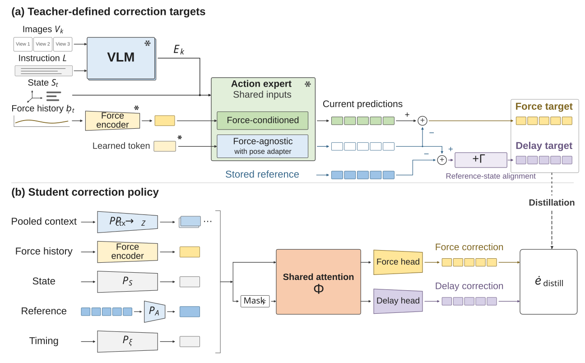

Overview
Learning what to correct
Force-aware vision-language-action policies typically predict task motion and contact-dependent adjustment together. Demonstrations provide the final action, without explicit labels that separate a reusable reference action from its correction.
ForceDelta-VLA constructs correction targets from paired predictions of a frozen teacher. A lightweight policy learns force correction and delay correction, then adjusts reference actions using recent force history and robot state between reference updates.
Method
Paired teacher predictions supervise two corrections
The force target is the pose difference between the teacher’s force-conditioned and learned force-agnostic predictions. The delay target compares the current force-agnostic prediction with the stored reference and includes reference-state alignment.

Force correction
Paired teacher predictions provide an explicit target for the change associated with force conditioning.
Delay correction
The target accounts for reference-action mismatch and the change in reference state.
Independent execution
The student updates corrections while the teacher generates the next reference action.
Real-robot results
Nine tasks, two robot platforms
The complete system achieves 82.2% mean success, compared with 54.4% for the original ForceVLA baseline. Direct execution of the Stage-1 Temporal Teacher achieves 70.6% using the same temporal force-aware backbone.
| Method | Mean success |
|---|---|
| ForceVLA | 54.4% |
| Temporal Teacher Direct execution | 70.6% |
| ForceDelta-VLA | 82.2% |
Relative to ForceVLA, mean peak contact force over successful trials is approximately 26% lower on both platforms. On Button Pressing, the Temporal Teacher already raises success from 50% to 80%; ForceDelta-VLA further increases it to 85%.
Task collection
Single-arm and bimanual manipulation
The evaluation covers initial contact, precise insertion, motion against friction, and motion constrained by the environment.